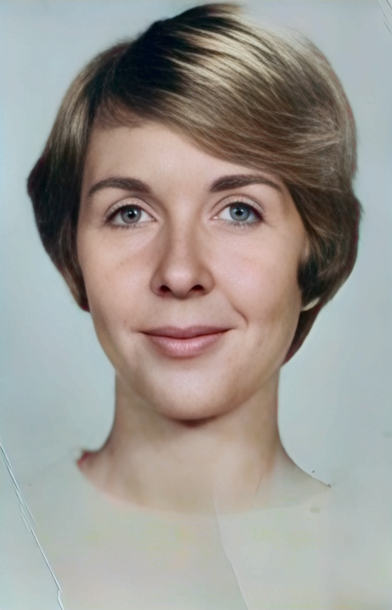
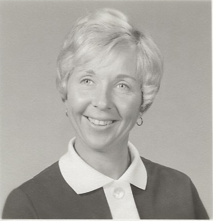
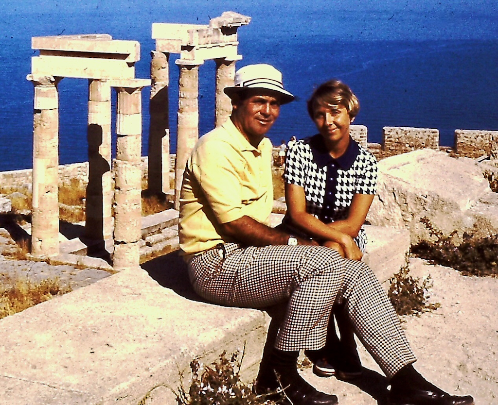

|
 Donna Henderson |
|
Madonna Marie Schaffner Henderson | |
|
Madonna Marie Schaffner Henderson was born in Dayton, Kentucky, the daughter of Eugene Henry Schaffner and Madge Marie Blanton. View Donna's FamilySearch ancestry profile. Learn more about her and her family in the book The Henderson Family and the California Perfume Company by Gregory F. Henderson. |
|
| Important Facts | |
| November 23, 1936 | Madonna was born in Dayton, Kentucky. She is the daughter of Eugene Henry Schaffner and Madge Marie Blanton. Her siblings include Thomas Dale Schaffner, Mary Ann Schaffner, and Charles Henry Schaffner. Source: Kentucky, U.S., Birth Index, 1911-1999. |
 |
| 1955 | She attended Catholic schools and graduated from La Salette Academy in Covington, Kentucky. | |
| She then completed two years of X-ray technology training at St. Elizabeth Hospital in Covington, Kentucky, and worked in doctors' offices and hospitals for several years before moving to Florida. | ||
| 1960-1968 | While living in Florida, Donna held various jobs. | |
| July 2, 1960 | Donn'a sister, Mary Ann Schaffner, married Gilbert James Benson at the St. James Church in Ludlow, Kentucky. They had four children together. Source: "Marriage," The Cincinnati Post, The Cincinnati Post and Times Star Cincinnati, Ohio · Tuesday, April 05, 1960. | |
| 1968 | Donna, her friend Bill Hood, and several girlfriends were on their way to a party. While sitting at the Silver Thatch bar in Pompano Beach waiting for the others to arrive, Alexander "Alex" D. Henderson approached Donna and asked if he could buy her a drink. Donna and her friends tried to persuade Alex to join them at the party, but he declined. Source: Conversation with Donna about Alex's biography, November 15, 2015. |

in Florida, 1969 |
| December 31, 1968 | Donn'a brother, Charles H Schaffner, married Sharon K Kennedy in Covington, Kentucky. They had three children together. Source: "Marriage," The Kentucky Post, Covington, Kentucky · Tuesday, December 31, 1968. | |
| 1969 | In 1969, Donna met Alex Henderson again at another party given by Bill Hood and they hit it off. He asked Donna out, and after several dates, they finally got together. Donna was unaware of his background and did not realize that he had recently divorced and was the father of five children. They dated for two years and broke up. Donna was planning on moving to San Francisco to start a new life. Alex then asked Donna to marry him. Source: Conversation with Donna about Alex's biography, November 15, 2015. | |
| April 9, 1970 | Donna (33) and Alex (46) of Pompano Beach were married in West Palm Beach, Florida at the Palm Beach Court House. Source: Florida, U.S., Marriage Indexes, 1822-1875 and 1927-2001, certificate no: 018335, vol. 2891; The Palm Beach Post, West Palm Beach, Florida, April 7, 1970. | |
| April 1970 | Donna and Alex flew to London, where they stayed at the landmark Savoy Hotel. They then continued their honeymoon in northern Italy, staying at an upscale resort on the shores of beautiful Lake Como. | |
| 1970 | In 1970, Alex and Donna traveled to Japan, where they attended the Kyoto Night Tour and experienced a traditional dinner with tea ceremony. |
 |
| May 1971 | Alex and Donna travelled the world going on the People-to-People tennis tour. They went to England, France, Germany, Switzerland, and Italy. They also took a Nile river cruise down Egypt and went to Israel and the Dead Sea. | |
| 1975-1999 | Alex and Donna bought a second home in Aspen, Colorado. The house was on the golf course. They also rented a home in Carmel, California to visit his children. | |
| 1984 | Alex and Donna built their dream house on the ocean at 1212 Hillsboro Mile, Hillsboro, Beach, Florida. The unique design won several awards and appeared on the T.V. show "Miami Vice." | |
| 1997 | Alex and Donna bought a home at the Carmel Valley Ranch Club in Carmel Valley, California. The house overlooked the golf course. The club had access to tennis courts, dinning room, and a clubhouse. | |
| April 7, 2015 | Her brother, Charles Henry Schaffner, died in Park Hills, Kenton, Kentucky. Source: "Obituary," The Cincinnati Enquirer, Cincinnati, Ohio · Thursday, April 23, 2015. | |
| May 12, 2020 | Alex Henderson, age 96, passed away peacefully in his home in Carmel Valley. He was cremated and his ashes were later interred in the gravesite Donna had prepared for them at the Floral Hills Memorial Gardens in Taylor Mill, Kentucky. Source: "Obituary," South Florida Sun Sentinel, Fort Lauderdale, Florida · Sunday, May 17, 2020. |

July 31, 2005 |
| 2020 | Donna flew back to Ohio to be with her family. | |
| Sept 3, 2026 | Donna Henderson, age 89, passed away peacefully at 12:15 pm at her Magnolia Springs assisted living apartment in Loveland, Ohio. | |
| October 17, 2026 | Donna’s Funeral Mass will be held at 10 a.m. in Loveland, Ohio, followd by a reception. The service will also be livestreamed for family and friends who are unable to attend in person. Her remains will be interred at the Floral Hills Memorial Gardens in Taylor Mill, Kentucky. Source: "Madonna Marie Henderson, Nov 23, 1936 — Sep 3, 2026," Obituary: Evans Funeral Home. |

Last updated: September 15, 2026